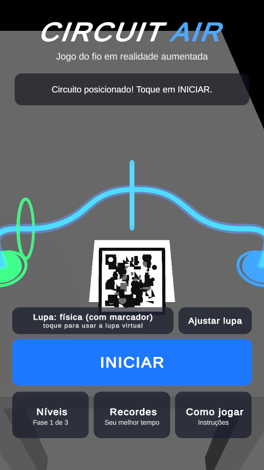
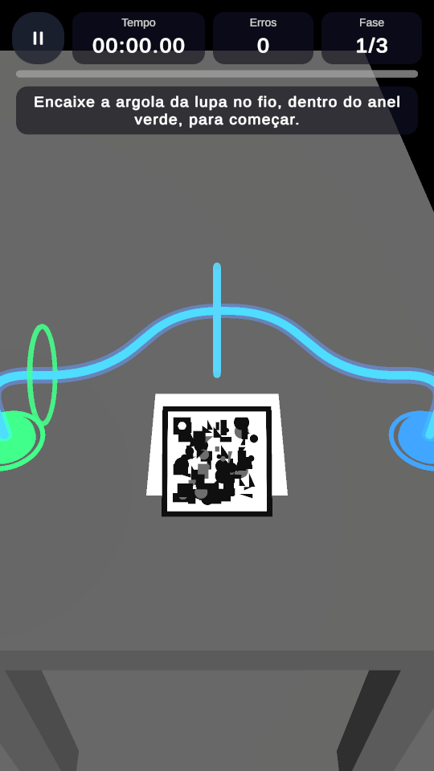
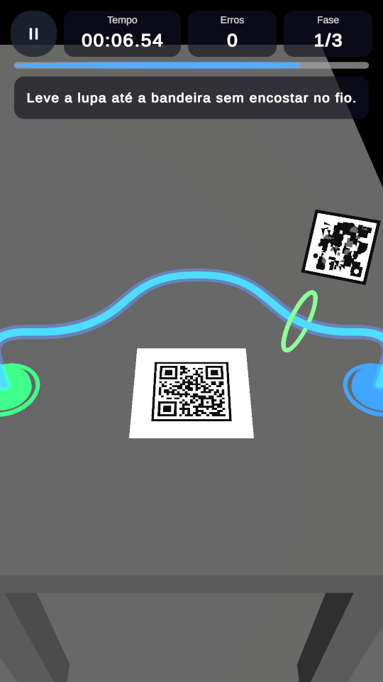
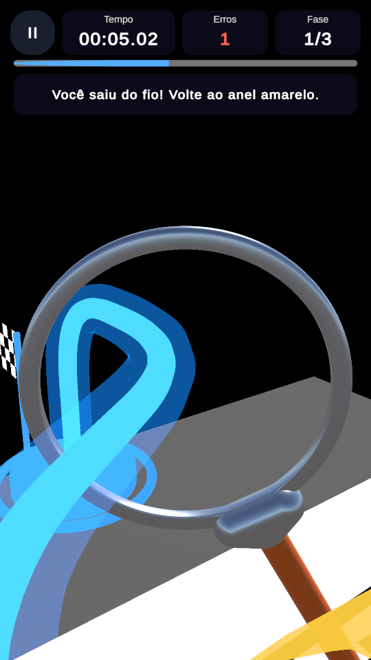
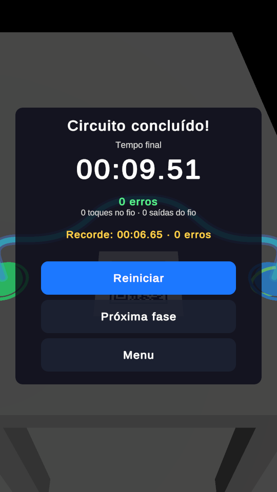
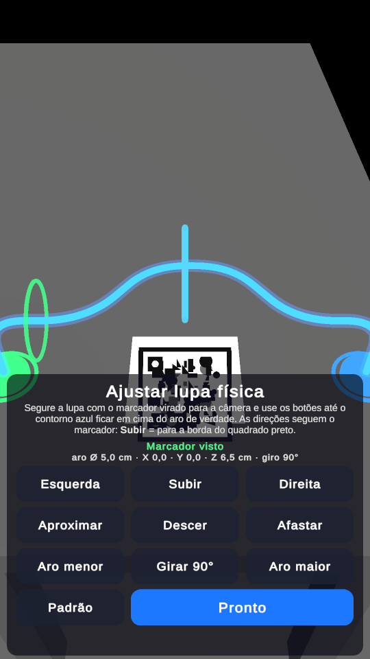
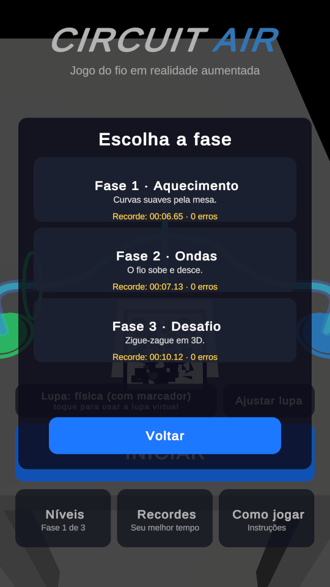
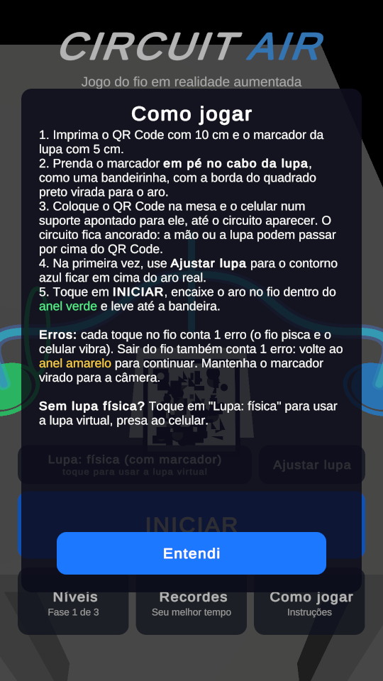

Rian Gustavo Atanagildo Julio Cesar Vanz Larissa Sindy Makufka Schlichting Lucas Edgar Cardoso
Nome do Aplicativo:
Circuit AIR · jogo do fio ("circuito elétrico") em realidade aumentada
Informe o contexto (interdisciplinaridade) no qual será utilizado:
O aplicativo será utilizado no contexto de desenvolvimento de jogos, programação, realidade aumentada,
visão computacional e interação humano-computador. Ele recria o jogo do fio: o jogador conduz uma lupa
(um aro com cabo) ao longo de um fio sem encostar nele. O fio é virtual: a câmera do celular reconhece um
QR Code impresso sobre a mesa e desenha o circuito em 3D em cima dele. A lupa é física e é reconhecida
pela câmera por meio de um marcador impresso preso no seu cabo, unindo um objeto real (a lupa) a um objeto virtual
(o circuito). O projeto combina programação em C#, computação gráfica (malhas geradas por código), geometria
(detecção de contato entre o aro e o fio) e rastreamento de imagens em RA.
Aponte no mínimo três objetivos esperados:
a) Permitir que o usuário percorra o caminho do circuito utilizando a lupa física, reconhecida pela câmera.ajustado
b) Identificar quando a lupa encostar no fio ou sair dele, registrando o erro.ajustado
c) Implementar um contador de tempo para registrar o tempo utilizado pelo jogador.
d) Implementar um contador de toques da lupa no circuito, permitindo contabilizar os erros cometidos durante a partida.
e) Utilizar realidade aumentada para posicionar o circuito virtual sobre o QR Code, mantendo-o
ancorado mesmo quando a mão ou a lupa cobrirem o QR Code.ajustado
Liste os requisitos de ferramentas de desenvolvimento, usabilidade, desempenho, plataforma e hardware necessário com sua respectiva configuração (requisitos não funcionais):
a) O aplicativo deverá ser desenvolvido utilizando Unity 6.3 LTS (6000.3.24f1) com Universal Render Pipeline e linguagem C#.
b) Deverá utilizar AR Foundation 6.3 (ARCore XR Plugin 6.3 no Android e ARKit XR Plugin 6.3 no iOS) para os recursos de realidade aumentada, sem misturar outras bibliotecas de RA. Os testes no computador usam o XR Simulation do próprio AR Foundation.detalhado
c) O aplicativo deverá funcionar em smartphones Android 7.1 ou superior compatíveis com ARCore (ARM64, OpenGL ES 3) e em iPhones compatíveis com ARKit. O app Android é distribuído como APK (pacote com.equipe4.circuitair); o iOS é gerado num Mac com Xcode.
d) O dispositivo deverá possuir câmera traseira. Recomenda-se deixar o celular num suporte ou tripé a 40 a 60 cm da mesa, apontado para o QR Code, para o jogador ter as mãos livres.novo
e) Materiais: QR Code impresso com 10 cm, marcador da lupa impresso com 5 cm preso em pé no cabo da lupa, e uma lupa com aro de 3 a 7 cm de diâmetro. As duas imagens tiveram nota 100 (de 100) na ferramenta de avaliação de imagens do ARCore.novo
f) O aplicativo deverá apresentar uma interface simples e intuitiva: em português, na vertical, com botões grandes e uma mensagem que diz o que fazer em cada momento.
g) O circuito deverá permanecer estável sobre o QR Code: antes da partida ele acompanha o QR Code com suavização; durante a partida fica preso a uma âncora AR e não some nem se mexe se o QR Code for coberto.
h) O aplicativo deverá apresentar um funcionamento fluido: a detecção de contato é feita por geometria (sem simulação física), leve o bastante para rodar a cada quadro.
i) A contagem deverá ser justa: a posição da lupa é verificada em passos de no máximo 3 mm entre os quadros (um movimento rápido não "atravessa" o fio sem contar), saltos acima de uma velocidade de mão humana não contam como avanço, e perder a lupa de vista por um instante não gera erro.novo
j) O projeto deverá utilizar Git/GitHub para controle de versão e ter testes automatizados (21 testes do Unity Test Framework, incluindo a garantia de que as três fases podem ser completadas sem encostar).ampliado
Enumere as principais funções (requisitos funcionais) do aplicativo (no mínimo cinco)?
1 O usuário deverá apontar a câmera do celular para o QR Code para que o aplicativo reconheça o marcador.
2 O usuário poderá pressionar o botão "Iniciar" para começar o desafio.
3 O aplicativo deverá posicionar o circuito virtual em realidade aumentada sobre o QR Code identificado e mantê-lo ancorado mesmo com o QR Code coberto.ajustado
4 O aplicativo deverá reconhecer a lupa física pelo marcador preso no cabo e desenhar um contorno sobre o aro real.novo
5 O usuário deverá percorrer o circuito utilizando a lupa: encaixar o aro no fio dentro do anel verde (o tempo começa) e seguir até a bandeira.
6 O aplicativo deverá identificar quando a lupa encostar no fio (o fio pisca em vermelho, toca um zumbido e o celular vibra).
7 O aplicativo deverá identificar quando a lupa sair do fio e exigir que o jogador volte ao anel amarelo para continuar (não é possível pular trechos).novo
8 O aplicativo deverá contabilizar a quantidade de vezes que a lupa encostou no circuito ou saiu dele.
9 O aplicativo deverá possuir um contador de tempo durante a partida (com pausa).
10 O aplicativo deverá identificar quando o usuário chegar ao final do circuito e encerrar a partida.
11 O aplicativo deverá apresentar ao usuário o tempo final, a quantidade de erros/toques e o recorde da fase.
12 O usuário poderá reiniciar a partida, ir para a próxima fase ou voltar ao menu.
13 O usuário poderá ajustar a lupa (posição do aro em relação ao marcador e tamanho do aro); o ajuste fica salvo.novo
14 O usuário poderá escolher entre três fases e consultar os recordes de cada uma.novo
15 O usuário poderá jogar com a lupa virtual (presa à câmera) quando não tiver a lupa física.novo
Cenário de uso e marcadores (o "mundo real" associado ao virtual):
O QR Code fica na mesa e é a referência do mundo real: o circuito virtual é desenhado em cima dele,
em escala real (cerca de 35 cm de largura e até 12 cm de altura).
O marcador da lupa fica em pé no cabo, como uma bandeirinha, virado para a câmera. Pela posição dele,
o app calcula onde está o aro e compara com o fio a cada quadro.
Depois que o circuito aparece, o QR Code pode ser coberto pela mão ou pela lupa: o circuito continua ancorado no lugar.
Desenhe e anexe as principais telas do aplicativo, associando-as aos requisitos funcionais.
Capturas do protótipo funcionando no Unity com o XR Simulation (mesa virtual com o QR Code e o marcador da lupa).
No celular, o fundo é a imagem da câmera.

MenuRF1, RF2, RF3: QR Code reconhecido, circuito posicionado, botão Iniciar, escolha da lupa.

Início da partidaRF3, RF4, RF5: circuito ancorado e anel verde onde o aro deve ser encaixado.

JogandoRF4, RF5, RF9: lupa física reconhecida (contorno verde no fio), tempo, erros, fase e andamento.

Erro: saiu do fioRF6, RF7, RF8: erro contado, mensagem e anel amarelo para voltar.

ResultadoRF10, RF11, RF12: tempo final, erros (toques e saídas), recorde, reiniciar.

Ajustar lupaRF13: alinha o contorno virtual com o aro real; o ajuste fica salvo.

Níveis e recordesRF14: três fases, cada uma com seu recorde.

Como jogarUsabilidade (RNF f): instruções de impressão, montagem e regras.
O que mudou em relação ao planejamento original, e por quê
Mudança
Motivo
A lupa física é reconhecida por um marcador impresso preso no cabo.
O AR Foundation (exigido no planejamento) reconhece imagens, não o formato de um aro de metal. Reconhecer o objeto em si exigiria o Vuforia (conta, licença e outra biblioteca de RA) e aros finos são difíceis de rastrear. Na versão anterior a lupa nunca era reconhecida porque a imagem "LupaMarker" não existia.
O circuito virou um fio em 3D que passa por dentro do aro.
É o jogo desenhado nas telas originais. "Encostar nas laterais" passou a ser "encostar no fio", e "sair das laterais" passou a ser "sair do fio".
Ancoragem do circuito como requisito explícito.
A lupa e a mão passam por cima do QR Code durante o jogo. O circuito guarda a última posição boa e fica preso a uma âncora AR, então não some nem treme.
Celular num suporte, em vez de webcam no computador.
O AR Foundation não funciona com webcam no PC. Com o celular parado no suporte o resultado é o mesmo de uma webcam e o projeto continua em AR Foundation, Android e iOS.
Saída do fio exige voltar ao anel amarelo; avanço rápido demais não conta.
No RA o aro pode atravessar o fio, o que não acontece no jogo real. Sem essa regra seria possível pular trechos do circuito.
Tela Ajustar lupa.
Cada lupa física tem um tamanho e um jeito de prender o marcador. O ajuste alinha o aro virtual com o real sem precisar mexer no código.
Três fases, recordes, pausa e lupa virtual.
As telas originais já mostravam "Fase 1/3", "Níveis" e "Recordes". A lupa virtual permite jogar e demonstrar sem a lupa física.
Itens das telas originais que ficaram de fora: Dica e configurações.
Simplificação. A tela "Como jogar" e as mensagens durante a partida cumprem o papel de dica.
Vuforia e cena antiga removidos do projeto.
O pacote do Vuforia nunca foi para o repositório e impedia o projeto de abrir; misturar duas bibliotecas de RA também era desaconselhado no próprio guia da equipe.
Como foi construído e testado
Scripts (C#):CircuitARController (rastreia o QR Code e o marcador da lupa e ancora o circuito),
WirePath e WireRingMath (caminho do fio e geometria aro × fio), CircuitWire (desenha o circuito),
LupaController (lupa física com calibração ou virtual), CircuitGameManager (regras, tempo, erros, recordes),
CircuitUI (todas as telas) e CircuitFeedback (sons e vibração). O menu do Editor
CircuitAIR > Configurar projeto e cena refaz a cena e as configurações do zero.
Testes automatizados (21, todos passando): geometria do contato, curvas do fio, escolha do trecho certo do fio
e a garantia de que as três fases podem ser completadas sem encostar, com a argola de cada fase e com aros reais de 3, 5 e 7 cm.
Testes jogando (XR Simulation): percurso perfeito nas três fases (0 erros), um toque (1 erro), sair e voltar ao fio
(1 erro), tentativa de pular 12 cm do circuito (bloqueada), lupa física percorrendo o circuito com a câmera parada (0 erros),
lupa sumindo da câmera e voltando, três vezes seguidas (0 erros), e o circuito não se deslocou nenhum milímetro com o QR Code coberto.
Ainda falta: testar num celular real com a lupa física da equipe e, se necessário, ajustar a lupa pela tela "Ajustar lupa".
Anexo · marcadores para imprimir (tamanho real, escala 100%)
A moldura preta do QR Code deve medir 6,6 cm (a imagem inteira, com a margem branca, mede 10 cm) e o marcador da lupa
5 cm. Recorte pela linha tracejada. Prenda o marcador em pé no cabo da lupa, com a borda do quadrado preto virada para o aro.